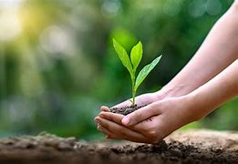

Sustainable living refers to adopting practices that minimize our environmental impact while promoting the well-being of future generations. It involves making mindful choices that reduce waste, conserve energy, and preserve natural resources. This can include actions like using renewable energy, reducing water consumption, recycling, and supporting eco-friendly products. Sustainable living encourages individuals to be conscious of their consumption habits and the effects they have on the planet, striving for a lifestyle that is both responsible and balanced.
In addition to environmental sustainability, it also incorporates social and economic aspects, such as supporting local communities, fair trade, and ethical consumption. Sustainable living promotes a holistic approach, where personal actions, community involvement, and policy advocacy work together to create a more resilient and equitable world. The goal is not just to reduce harm, but to improve quality of life for all, fostering a healthy relationship between humanity and the Earth.
Sustainable living is a broad lifestyle approach that aims to reduce environmental impact across multiple areas, such as energy consumption, water usage, food choices, and transportation. It focuses on making mindful decisions that prioritize long-term environmental health, including choosing renewable energy, reducing carbon footprints, and supporting ethical production practices. Sustainable living encompasses a variety of strategies to reduce resource depletion and promote a healthier planet for future generations.
Zero waste, on the other hand, is a more specific practice that emphasizes reducing the amount of waste sent to landfills or incinerators. It involves minimizing consumption, reusing products, composting organic waste, and recycling materials to create a circular economy. The goal of zero waste is to divert as much waste as possible from the waste stream, aiming for a "closed loop" where all materials are reused, recycled, or composted, and nothing goes to waste. While zero waste is part of sustainable living, sustainable living addresses a wider range of environmental concerns beyond just waste.
| Eating a Plant-Based Diet | Composting | Reducing Single-Use Plastic |
|---|---|---|
|
Animal products like meat, dairy, and eggs are the highest-impact foods on Earth. To lower your diet’s footprint, consider transitioning to a vegan diet, or at least eating more vegan meals. Along with this, it’s important to focus on wasting less food. |
Instead of sending food scraps (that includes things like vegetable peels, avocado pits, and spoiled leftovers) to landfill, start composting. Composting is the process of returning anything that comes from nature to the earth, and letting it biodegrade into soil. Setting up a compost bin is super easy if you have a backyard, but it’s also possible if you live in an apartment or in a city with no yard. |
Instead of sending food scraps (that includes things like vegetable peels, avocado pits, and spoiled leftovers) to landfill, start composting. Composting is the process of returning anything that comes from nature to the earth, and letting it biodegrade into soil. Setting up a compost bin is super easy if you have a backyard, but it’s also possible if you live in an apartment or in a city with no yard. |
| Transportation | Shopping |
|---|---|
|
If you drive a gas-powered car every day, consider alternatives with lower emissions if they are available to you. For example, try walking, riding a bike, taking public transportation, carpooling, or investing in an electric or hybrid car when you need a new one. Additionally, many environmentalists have given up flying in airplanes (such as Greta Thunberg) due to the high environmental footprint, so consider traveling by train instead of by air when possible. |
The most sustainable form of shopping is not to shop at all — and the second most sustainable form (and more realistic form) of shopping is shopping secondhand. Before buying anything new, check out your local thrift store, websites and apps like Poshmark, Craigslist, or eBay, or your local Buy Nothing group on Facebook. When it comes to items that you can’t buy secondhand, seek out companies that make products from natural or recycled materials while following sustainable business practices. |
The average American produces 4.4 pounds of trash per day, according to the EPA — that comes out to more than 1,600 pounds per year. So by transitioning to a zero-waste lifestyle, you could literally save thousands of pounds of trash from going to landfills, where it would emit harmful greenhouse gases.
By eating a vegan or plant-based diet, every year, you can save: 401,500 gallons of water, 14,600 pounds of grain; 10,950 square feet of forest, 7,300 pounds of CO2, and 365 animal lives, accord.